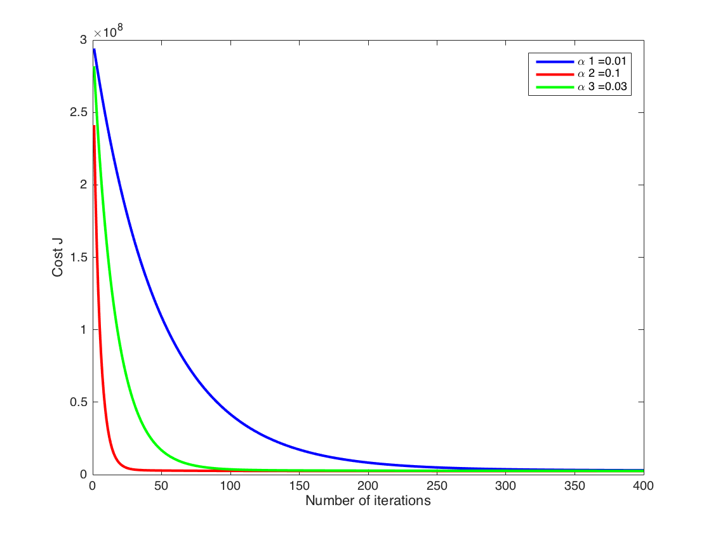

Contents
================ Multivariate Linear Regression ===============
================ Part 1: Feature Normalization ================
Clear and Close Figures
clear; close all; clc
fprintf('Loading data ...\n');
fprintf('\n');
Loading data ...
Load Data
data = load('sourceFiles/salaries.txt');
X = data(:, 1:5);
[m, n] = size(X);
y = data(:, n+1);
fprintf('First 10 examples from the dataset: \n');
fprintf('\n');
fprintf(['Academic salaries based on:\n ' ...
'\t- gender, \n\t- rank, \n\t- year in current rank, \n\t- highest degree,' ...
'\n\t- years since highest degree']);
fprintf('\n');
fprintf('\n');
fprintf(' x = [%.0f %.0f %.0f %.0f %.0f], y = %.0f \n', [X(1:10,:) y(1:10,:)]');
fprintf('\n');
fprintf('Program paused. Press enter to continue.\n');
pause;
fprintf('\n');
fprintf('Normalizing Features ...\n');
[X mu sigma] = featureNormalize(X);
X = [ones(m, 1) X];
First 10 examples from the dataset:
Academic salaries based on:
- gender,
- rank,
- year in current rank,
- highest degree,
- years since highest degree
x = [0 3 25 1 35], y = 36350
x = [0 3 13 1 22], y = 35350
x = [0 3 10 1 23], y = 28200
x = [1 3 7 1 27], y = 26775
x = [0 3 19 0 30], y = 33696
x = [0 3 16 1 21], y = 28516
x = [1 3 0 0 32], y = 24900
x = [0 3 16 1 18], y = 31909
x = [0 3 13 0 30], y = 31850
x = [0 3 13 0 31], y = 32850
Program paused. Press enter to continue.
Normalizing Features ...
================ Part 2: Gradient Descent ================
fprintf('\n');
fprintf('Running gradient descent ...\n');
fprintf('\n');
numIters = 400;
alpha1 = 0.01;
theta1 = zeros(n+1, 1);
[theta1, J1_history] = gradientDescent(X, y, theta1, alpha1, numIters);
alpha2 = 0.1;
theta2 = zeros(n+1, 1);
[theta2, J2_history] = gradientDescent(X, y, theta2, alpha2, numIters);
alpha3 = 0.03;
theta3 = zeros(n+1, 1);
[theta3, J3_history] = gradientDescent(X, y, theta3, alpha3, numIters);
figure;
plot(1:numel(J1_history), J1_history, '-b', 'LineWidth', 2);
xlabel('Number of iterations');
ylabel('Cost J');
hold on;
plot(1:numel(J2_history), J2_history, '-r', 'LineWidth', 2);
xlabel('Number of iterations');
ylabel('Cost J');
hold on;
plot(1:numel(J3_history), J3_history, '-g', 'LineWidth', 2);
xlabel('Number of iterations');
ylabel('Cost J');
a1 = num2str(alpha1);
a2 = num2str(alpha2);
a3 = num2str(alpha3);
l1 = strcat('\alpha 1 = ', a1);
l2 = strcat('\alpha 2 = ', a2);
l3 = strcat('\alpha 3 = ', a3);
legend(l1, l2, l3);
fprintf('Theta computed from gradient descent: \n');
fprintf('\n');
fprintf(' %f \n', theta2);
Running gradient descent ...
Theta computed from gradient descent:
23797.653846
703.078477
4936.189608
2710.137820
-670.640429
-1426.384294

================ Part 3: Gradient Descent Predictions ================
x = [1; (1-mu(1))/sigma(1); (1-mu(2))/sigma(2); (8-mu(3))/sigma(3); (0-mu(4))/sigma(4); (10-mu(5))/sigma(5)];
salary1A = theta2' * x;
x = [1; (0-mu(1))/sigma(1); (1-mu(2))/sigma(2); (8-mu(3))/sigma(3); (0-mu(4))/sigma(4); (10-mu(5))/sigma(5)];
salary1B = theta2' * x;
x = [1; (1-mu(1))/sigma(1); (3-mu(2))/sigma(2); (10-mu(3))/sigma(3); (1-mu(4))/sigma(4); (15-mu(5))/sigma(5)];
salary2A = theta2' * x;
x = [1; (0-mu(1))/sigma(1); (3-mu(2))/sigma(2); (10-mu(3))/sigma(3); (1-mu(4))/sigma(4); (15-mu(5))/sigma(5)];
salary2B = theta2' * x;
fprintf('\n----------------------------------------------------------------------------\n');
fprintf('----------------------------------------------------------------------------\n');
fprintf('PREDICTION 1\n');
fprintf('\n');
fprintf(['Predicted salary of: ' ...
'\n\t- a female employee,' ...
'\n\t- assistant professor,' ...
'\n\t- 8 years in current rank,' ...
'\n\t- masters degree,' ...
'\n\t- 10 years since highest degree was earned ' ...
'(using gradient descent):\n $%f\n'], salary1A);
fprintf('\n');
fprintf(['Predicted salary of: ' ...
'\n\t- a male employee,' ...
'\n\t- assistant professor,' ...
'\n\t- 8 years in current rank,' ...
'\n\t- masters degree, '...
'\n\t- 10 years since highest degree was earned ' ...
'(using gradient descent):\n $%f\n'], salary1B);
fprintf('\n');
fprintf('PREDICTION 2\n');
fprintf('\n');
fprintf(['Predicted salary of: ' ...
'\n\t- a female employee,' ...
'\n\t- full professor,' ...
'\n\t- 10 years in current rank,' ...
'\n\t- doctorate degree,' ...
'\n\t- 15 years since highest degree was earned ' ...
'(using gradient descent):\n $%f\n'], salary2A);
fprintf('\n');
fprintf(['Predicted salary of: ' ...
'\n\t- a male employee,' ...
'\n\t- full professor,' ...
'\n\t- 10 years in current rank,' ...
'\n\t- doctorate degree, '...
'\n\t- 15 years since highest degree was earned ' ...
'(using gradient descent):\n $%f\n'], salary2B);
fprintf('\n----------------------------------------------------------------------------\n');
fprintf('----------------------------------------------------------------------------\n');
fprintf('Program paused. Press enter to continue.\n');
fprintf('\n');
pause;
----------------------------------------------------------------------------
----------------------------------------------------------------------------
PREDICTION 1
Predicted salary of:
- a female employee,
- assistant professor,
- 8 years in current rank,
- masters degree,
- 10 years since highest degree was earned (using gradient descent):
$21080.772132
Predicted salary of:
- a male employee,
- assistant professor,
- 8 years in current rank,
- masters degree,
- 10 years since highest degree was earned (using gradient descent):
$19472.770136
PREDICTION 2
Predicted salary of:
- a female employee,
- full professor,
- 10 years in current rank,
- doctorate degree,
- 15 years since highest degree was earned (using gradient descent):
$31419.871472
Predicted salary of:
- a male employee,
- full professor,
- 10 years in current rank,
- doctorate degree,
- 15 years since highest degree was earned (using gradient descent):
$29811.869477
----------------------------------------------------------------------------
----------------------------------------------------------------------------
Program paused. Press enter to continue.
================ Part 4: Normal Equations ================
fprintf('Solving with normal equations...\n');
Solving with normal equations...
Load Data
data = csvread('sourceFiles/salaries.txt');
X = data(:, 1:5);
[m, n] = size(X);
y = data(:, n+1);
X = [ones(m, 1) X];
theta = normalEqn(X, y);
fprintf('\n');
fprintf('Theta computed from the normal equations: \n');
fprintf('\n');
fprintf(' %f \n', theta);
salary1A = [1, 1, 1, 8, 0, 10] * theta;
salary1B = [1, 0, 1, 8, 0, 10] * theta;
salary2A = [1, 1, 3, 10, 1, 15] * theta;
salary2B = [1, 0, 3, 10, 1, 15] * theta;
fprintf('\n----------------------------------------------------------------------------\n');
fprintf('----------------------------------------------------------------------------\n');
fprintf('PREDICTION 1\n');
fprintf('\n');
fprintf(['Predicted salary of: ' ...
'\n\t- a female employee,' ...
'\n\t- assistant professor,' ...
'\n\t- 8 years in current rank,' ...
'\n\t- masters degree,' ...
'\n\t- 10 years since highest degree was earned ' ...
'(using normal equations):\n $%f\n'], salary1A);
fprintf('\n');
fprintf(['Predicted salary of: ' ...
'\n\t- a male employee,' ...
'\n\t- assistant professor,' ...
'\n\t- 8 years in current rank,' ...
'\n\t- masters degree,' ...
'\n\t- 10 years since highest degree was earned ' ...
'(using normal equations):\n $%f\n'], salary1B);
fprintf('\n');
fprintf('PREDICTION 2\n');
fprintf('\n');
fprintf(['Predicted salary of: ' ...
'\n\t- a female employee,' ...
'\n\t- full professor,' ...
'\n\t- 10 years in current rank,' ...
'\n\t- doctorate degree,' ...
'\n\t- 15 years since highest degree was earned ' ...
'(using normal equations):\n $%f\n'], salary2A);
fprintf('\n');
fprintf(['Predicted salary of: ' ...
'\n\t- a male employee,' ...
'\n\t- full professor,' ...
'\n\t- 10 years in current rank,' ...
'\n\t- doctorate degree,' ...
'\n\t- 15 years since highest degree was earned ' ...
'(using normal equations):\n $%f\n'], salary2B);
fprintf('\n----------------------------------------------------------------------------\n');
fprintf('----------------------------------------------------------------------------\n');
Theta computed from the normal equations:
11208.836771
1648.971250
5770.156468
496.512685
-1458.027706
-145.614817
----------------------------------------------------------------------------
----------------------------------------------------------------------------
PREDICTION 1
Predicted salary of:
- a female employee,
- assistant professor,
- 8 years in current rank,
- masters degree,
- 10 years since highest degree was earned (using normal equations):
$21143.917802
Predicted salary of:
- a male employee,
- assistant professor,
- 8 years in current rank,
- masters degree,
- 10 years since highest degree was earned (using normal equations):
$19494.946552
PREDICTION 2
Predicted salary of:
- a female employee,
- full professor,
- 10 years in current rank,
- doctorate degree,
- 15 years since highest degree was earned (using normal equations):
$31491.154319
Predicted salary of:
- a male employee,
- full professor,
- 10 years in current rank,
- doctorate degree,
- 15 years since highest degree was earned (using normal equations):
$29842.183069
----------------------------------------------------------------------------
----------------------------------------------------------------------------